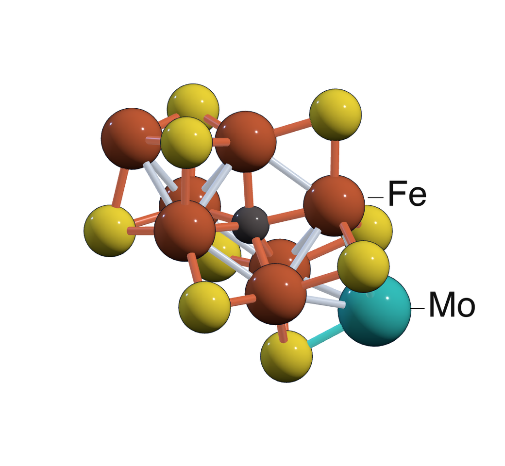

Challenge 01
Strongly correlated metalloclusters
Systems such as FeMoco demand accurate control of high-rank excitations and enormous Hilbert spaces at chemically meaningful energy scales.
Image: Asthana Group.